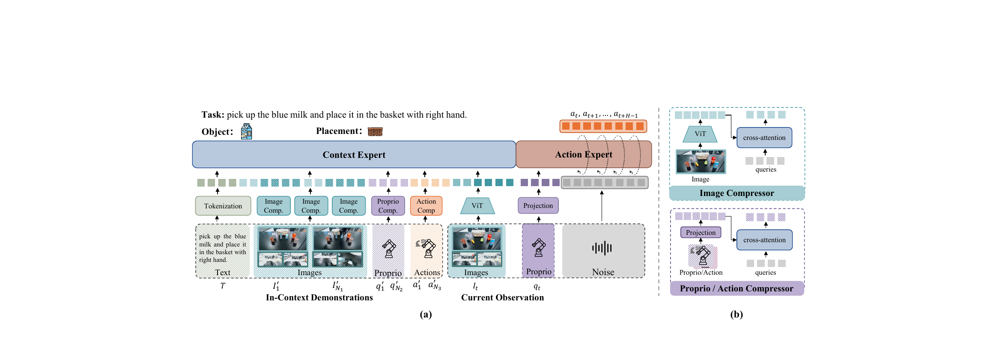
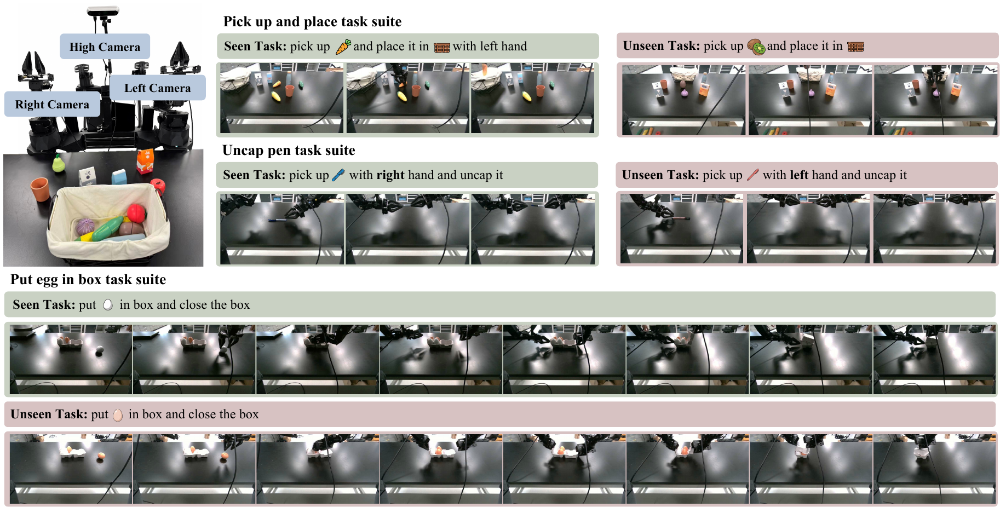

Although highly effective in vision and language domains, applying in-context learning to robotics remains challenging. Existing autoregressive in-context imitation methods discretize continuous actions and exacerbate the accumulation of early prediction errors through next-token prediction, limiting their generalization on unseen task configurations. Meanwhile, flow-matching policies have been explored for continuous robot control and can help mitigate compounding errors; however, in-context imitation learning within a flow-matching framework remains underexplored.
We introduce ContextFlow, a conditional flow-matching model that learns continuous action distributions for in-context imitation learning. ContextFlow conditions flow-based action prediction on demonstrations and observations, enabling robust generation from noisy action distributions. Perceiver-style multimodal context compressors distill visual, proprioceptive, and action sequences into compact, task-relevant latent representations.
On LIBERO, ContextFlow outperforms ICRT by 35 percentage points in average success rate on unseen task configurations, while matching the task-specific fine-tuned VLA model π0 without any fine-tuning on unseen tasks. On real robots, it generalizes to unseen configurations of both single-arm and bimanual tasks, achieving 40% success on a new pen-uncapping configuration.

ContextFlow architecture. Multimodal demonstrations are compressed into context tokens, while the action expert transforms noise into a continuous action chunk conditioned on the context and current observation.
ContextFlow models the conditional action distribution directly in continuous space. Given one in-context demonstration and the current observation, it initializes a noisy action chunk and refines the full chunk through ten conditional flow-matching updates. Unlike autoregressive policies, the model does not discretize actions or predict future controls token by token.
Long robot demonstrations contain substantial spatial and temporal redundancy. Separate perceiver-style compressors condense image, proprioceptive-state, and action streams into fixed-size latent sets. The context expert fuses these demonstration tokens with the task instruction and current images; the action expert then attends to that context while predicting a 50-step action horizon. Block-wise causal attention allows the context tokens to be cached during inference.
Models are trained on seen tasks and evaluated on four unseen task configurations from LIBERO-Spatial and LIBERO-Object. Each task is evaluated over 50 trials. ContextFlow reaches 73.5% average success, outperforming ICRT by 35 points and ContextAR by 20 points.
| Model | Test-time adaptation | Spatial | Object | Average |
|---|---|---|---|---|
| OpenVLA-OFT | Text prompt | 63.0 | 17.0 | 40.0 |
| π0 | Text prompt | 26.0 | 63.0 | 44.5 |
| π0 (FT) | 1-demo fine-tuning | 63.0 | 82.0 | 72.5 |
| ICRT | 1-demo context | 27.0 | 50.0 | 38.5 |
| ContextAR | 1-demo context | 53.0 | 54.0 | 53.5 |
| ContextFlow-Plain | 1-demo context | 55.0 | 73.0 | 64.0 |
| ContextFlow (Ours) | 1-demo context | 64.0 | 83.0 | 73.5 |
FT fine-tunes π0 on one demonstration from each unseen task. ContextFlow uses the demonstration only as input and does not update its weights.

Real-world task suites. The evaluation covers unseen objects and left–right hand configurations for single-arm and fine-grained bimanual manipulation.
The real-world dataset contains 1,318 multimodal trajectories across 25 task configurations. ContextFlow succeeds on all six held-out configurations, including long-horizon bimanual tasks, while ICRT succeeds only on the pear pick-and-place task.
| Model | Pear | Orange | Banana | Kiwi | Red pen | Red egg |
|---|---|---|---|---|---|---|
| ICRT | 2/10 | 0/10 | 0/10 | 0/10 | 0/10 | 0/10 |
| ContextFlow | 2/10 | 5/10 | 4/10 | 4/10 | 4/10 | 6/10 |
Flow matching lowers cumulative trajectory MSE from 4.7 m² for ContextAR to 3.0 m² for ContextFlow-Plain. Multimodal context compression reduces it further to 2.2 m². Attention visualizations show that the image compressor follows task progress, shifting from the gripper to the manipulated object and finally to the placement target.
@article{ding2026contextflow,
title = {ContextFlow: In-Context Flow Matching for Robot Manipulation},
author = {Ding, Jian and Dai, Xianjie and Herzig, Roei and Hroub, Nussair and Mai, Jinjie and Dai, Dengxin and Ghanem, Bernard and Elhoseiny, Mohamed},
year = {2026},
note = {Preprint}
}